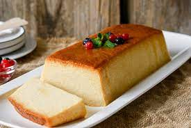
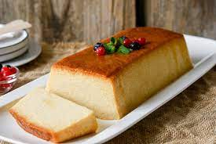

El portal ideal para descubrir y compartir recetas de comida casera. Podrás encontrar una amplia variedad de recetas deliciosas, consejos prácticos, videos instructivos y la oportunidad de conectarte con otros amantes de la cocina. Únete a nosotros y comienza a explorar el maravilloso mundo de la gastronomía.
¡Te esperamos en Grandmother Food!
 
